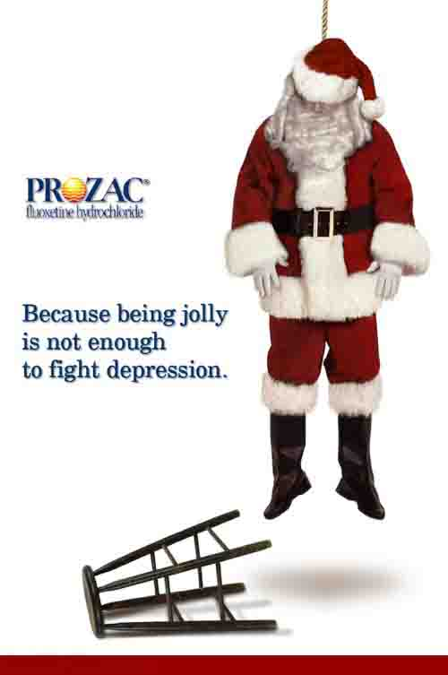

Άγιος Βασίλης ή το βρέφος Ιησούς;
του LEONARDO BOFF
(30/12/2006)
Λόγω του ότι έχω μια μακριά γενειάδα και άσπρα μαλλιά, πολλά παιδιά, όταν με βλέπουν, με φωνάζουν Άγιο Βασίλη. Προσπαθώ ανεπιτυχώς να τους εξηγήσω ότι είμαι ο αδελφός του Άγιου Βασίλη και ότι η δουλειά μου είναι να επιβλέπω τα παιδιά, να παρατηρώ αν είναι καλοί μαθητές, αν φέρονται καλά στους συμμαθητές τους και αν ακούν τις συμβουλές των γονιών τους. Τους λέω ότι, μετά, θα αναφέρω τα πάντα στον Άγιο Βασίλη και εκείνος θα τους φέρει όμορφα δώρα τα Χριστούγεννα. Μια τέτοια ημέρα, κάποιο από τα παιδιά με ακολούθησε με απορία και όταν με είδε να μπαίνω σε ένα αυτοκίνητο, γύρισε στον πατέρα του και του είπε: « Μπαμπά, ο Άγιος Βασίλης δεν ήλθε με έλκηθρο, ήλθε με ένα αυτοκίνητο».
Αυτή είναι μια μορφή των Χριστουγέννων, με τις εικόνες που της αντιστοιχούν. Ο Άγιος Βασίλης είναι μια φιγούρα της αγοράς . Είναι ο παχουλός γηραιός άνδρας ο οποίος προσπαθεί να σαγηνεύσει τα παιδιά, έτσι ώστε να αναγκασθούν οι γονείς τους να τους αγοράσουν δώρα. Η μνήμη την οποία αντανακλά είναι του Αγίου Νικολάου, ο οποίος επίσης έφερνε δώρα, αλλά σήμερα έχει εξαφανισθεί παραχωρώντας τη θέση του στην παιδική φιγούρα ενός καλοπροαίρετου, αγαθού γηραιού άνδρα ο οποίος βγάζει εκπλήξεις από το σάκο του προαγορασμένα αντικείμενα, τοποθετημένα στο σάκο. Καθώς κάθε σπίτι έχει τηλεόραση ενώ το ψωμί μπορεί να λείπει, αλλά η τηλεόραση ποτέ τα παιδιά των φτωχών βλέπουν τον Άγιο Βασίλη και ονειρεύονται το μαγικό κόσμο που τους δείχνει, γεμάτο δώρα, παιδικά αυτοκίνητα, κούκλες και ηλεκτρονικά παιχνίδια, στον οποίο σπάνια μπορούν να έχουν πρόσβαση. Και υποφέρουν για αυτό, παρά τη λάμψη στα μάτια τους. Η αγορά είναι ο νέος θεός ο οποίος απαιτεί υποταγή από όλους. Γι'αυτό τα παιδιά πιέζουν τους γονείς τους για να σταματήσει ο Άγιος Βασίλης στο «δικό τους» σπίτι. Μετά υποφέρουν οι γονείς, γιατί δεν μπορούν να εκπληρώσουν τις επιθυμίες των παιδιών τους που έχουν ξελογιαστεί από τα τόσα αντικείμενα-φετίχ που τους δείχνει ο Άγιος Βασίλης.
Η αγορά αποτελεί μια από τις κυριότερες δημιουργίες. Υπήρξαν και υπάρχουν πολλές μορφές αγοράς. Η δική μας, καπιταλιστικού τύπου, χαρακτηρίζεται από τον αποκλεισμό και επομένως αποτελεί ένα θύτη ατόμων και επιχειρήσεων. Είναι πλήρως ανταγωνιστική και καθόλου αλληλέγγυα. Μόνο αυτοί οι οποίοι παράγουν και καταναλώνουν έχουν σημασία. Οι φτωχοί πρέπει να ικανοποιούνται με ψίχουλα ή να ζουν άσχημα στο περιθώριο της κοινωνίας. Τα Χριστούγεννα, ο Άγιος Βασίλης είναι η κεντρική καταναλωτική φυσιογνωμία για όσους είναι μέσα στο σύστημα και μπορούν να πληρώσουν.
Η γέννηση του βρέφους Ιησού είναι διαφορετική. Γεννήθηκε σε μια ταπεινή και σεμνή οικογένεια. Τη στιγμή της γέννησής του, ανάμεσα στα ζώα, οι άγγελοι τραγουδούσαν στον ουρανό, οι βοσκοί είχαν καθηλωθεί από τα συναισθήματα και κάποιοι σοφοί ήλθαν από μακριά για να τον χαιρετήσουν. Όταν μεγάλωσε έγινε ένας εκπληκτικός αφηγητής ιστοριών και ένας περιπλανώμενος προσκυνητής με το μήνυμα της πλήρους συμπερίληψης όλων, ξεκινώντας από τους φτωχούς, τους οποίους αποκαλούσε «ευλογημένους». Όσοι διατηρούν την ιερή μνήμη του, ακούν τη νύχτα των Χριστουγέννων την ιστορία της γέννησής του και γιορτάζουν μια ανθρωπιστική παρουσία του Θεού, ο οποίος πήρε τη μορφή ενός παιδιού. Και τον τιμούν γευματίζοντας με την οικογένεια και τους φίλους τους. Εδώ δεν υπάρχει ούτε αγορά, ούτε αποκλεισμένοι, μόνο φως, ευτυχία και αλληλεγγύη. Η ανταλλαγή δώρων συμβολίζει το μεγαλύτερο δώρο που μας έδωσε ο Θεός: τον εαυτό του με τη μορφή ενός παιδιού. Καλλιεργεί μέσα μας την ελπίδα ότι μπορούμε να ζήσουμε χωρίς τον Άγιο Βασίλη, ο οποίος δεν μας πουλάει τίποτα παραπάνω από ψευδαισθήσεις.
Ο Ντον Πέτρο Κασανταλίγκα, βλέποντας το θείο βρέφος έγραψε: «Δεν έχω δει αυτό το αστέρι, αλλά έχω δει έναν πολύ φτωχό Θεό. Η Μαρία είχε επίγνωση, όπως επίγνωση είχε η νύχτα. Και ο βασιλιάς Ηρώδης ήταν για πάντα φοβισμένος ». Ο βασιλιάς Ηρώδης δεν είναι πλέον ένα πρόσωπο, αλλά ένα σύστημα το οποίο συνεχίζει να θυσιάζει ανθρώπινες υπάρξεις στο βωμό ενός μοναχικού καταναλωτισμού.
--------------------------------------------------------
Ο Leonardo Boff είναι καθηγητής πανεπιστημίου στη Θεολογία και τη Φιλοσοφία και υπήρξε ένας εκ των θεμελιωτών της Θεολογίας της Απελευθέρωσης στη Βραζιλία.
|